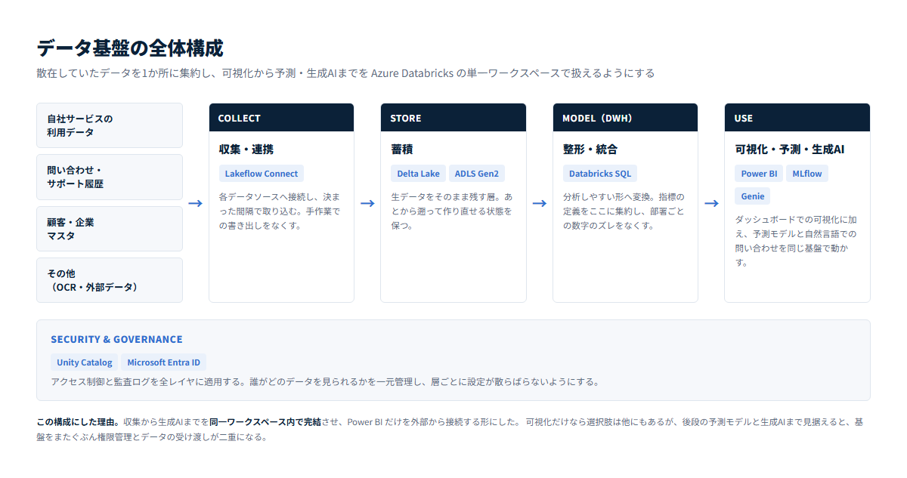
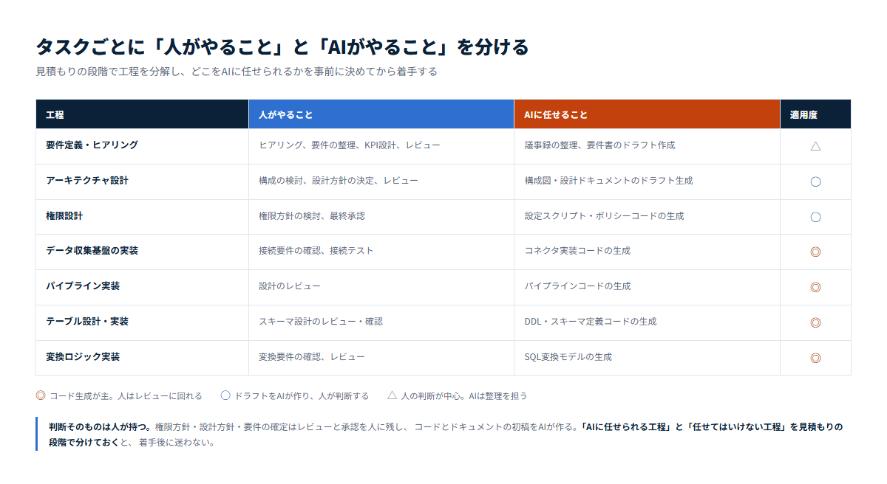

データ活用の相談は「可視化したい」から始まることが多いのですが、実際に困っているのはその手前と、その先にあります。
可視化だけを目的にすると、あとから予測や生成AIを足すときに基盤をまたぐことになります。最初から後段を見据えて設計します。

データ基盤の全体構成
Power BI 以外は同一の Azure Databricks ワークスペース内で完結し、Power BI だけを外部から接続します。
比較したのは「Microsoft Fabric 併用案」と「Azure Databricks 単体案」の2つです。 Fabric 併用案にも利点はあります。Power BI との Direct Lake 連携が滑らかで、容量ベース（F SKU）の課金は費用が読みやすく、既存の Power BI Premium 資産があればそのまま活かせます。
ただしこの案では、機械学習と生成AIを別途 Databricks と連携させる必要があります。 Phase3・Phase4を見据えると、そこで基盤をまたぐことになります。
そのため単体案を採りました。収集から生成AIまでを Unity Catalog で一元管理でき、MLflow で予測モデルの運用に乗せられ、Phase4の自然言語チャットは Genie でそのまま実装できます。 Power BI は接続先を変えるだけで、資産として継続利用できます。
基盤をまたぐと、権限管理とデータの受け渡しが二重になります。作るときは大差なくても、運用が始まってから効いてきます。
最初から全部を作りません。まず可視化までを動かし、そこで得たものを見ながら次へ進みます。段階ごとに投資判断ができる形にしています。
Phase1を動かしてから次を決めます。先に全体像を示しつつ、投資は段階的にという進め方です。
「AIで開発を速くします」とだけ言っても、何がどう変わるかは伝わりません。見積もりの段階で工程を分解し、どこをAIに任せるかを決めてから着手します。

工程ごとの役割分担（実際の見積もりから抜粋・工数は非掲載）
コードとドキュメントの初稿はAIが作れます。一方で、権限の方針、設計の方針、要件の確定は人が持ちます。 ここを曖昧にしたまま進めると、あとから戻る作業のほうが大きくなります。
見積もりの時点でこの線を引いておくと、着手後に「これはAIに任せていいのか」で迷いません。
「何から手を付ければいいか分からない」という段階でも構いません。 いま持っているデータと、見たい数字を伺うところから始めます。
通常1営業日以内にご返信します